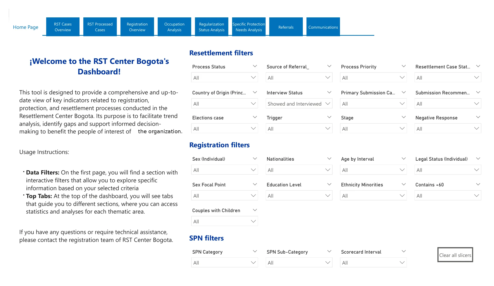
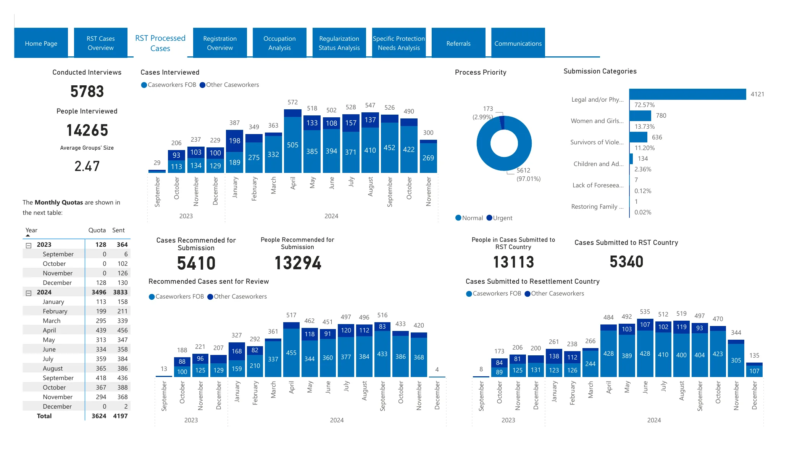
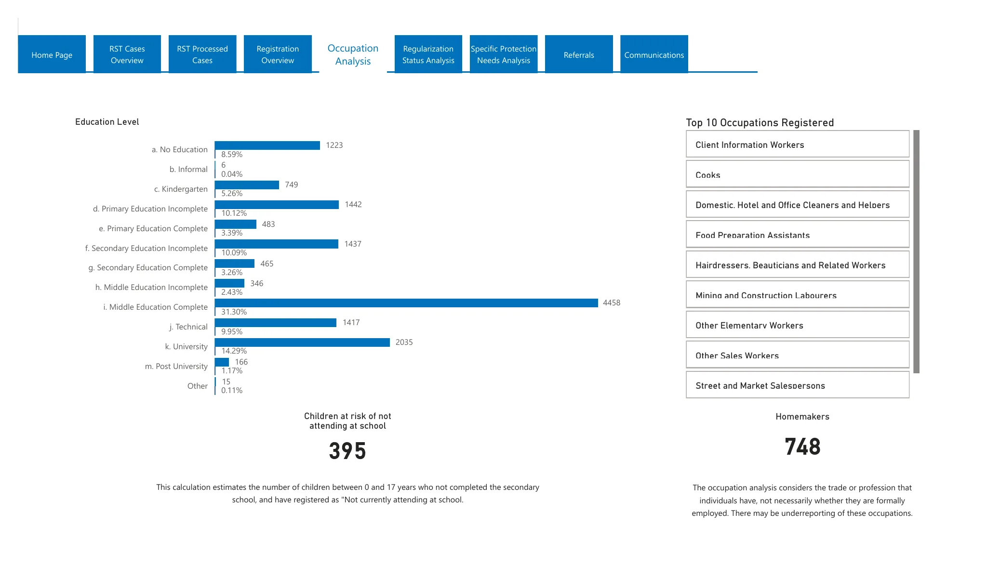
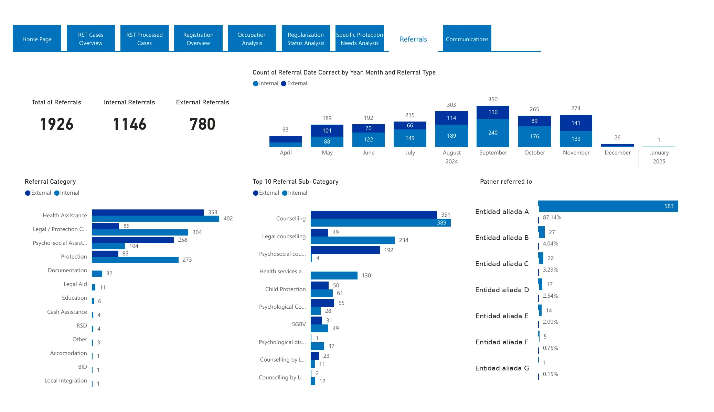

- Para
- ACNUR, Centro de Reasentamiento de Bogotá
- Producto
- Tablero interactivo de 9 páginas
- Fuente de datos
- ProGres (registro)
- Herramientas
- Power BI
El problema
El reporte operativo del Centro dependía de un factsheet armado a mano. Hacía falta un solo lugar con una lectura actualizada de los procesos de registro, protección y reasentamiento, que sirviera para ver tendencias, identificar brechas y apoyar la toma de decisiones.
Cómo está organizado
Una página de inicio con guía de uso y filtros, y ocho secciones de análisis a las que se llega por pestañas.
1 · Casos de reasentamiento
Visión general: origen de la remisión, estado del proceso y del caso, país de origen y de envío, y recomendación de envío.
2 · Casos procesados
Entrevistas realizadas por mes, casos recomendados y enviados, y cupos mensuales frente a lo enviado.
3 · Registro
Personas y grupos registrados en el tiempo, por género, edad, composición familiar y nacionalidad.
4 · Ocupación y educación
Nivel educativo y ocupaciones registradas, con una nota que aclara cómo se calcula cada indicador.
5 · Regularización
Estatus legal y documentos que prueban la regularización, a partir de lo registrado en ProGres.
6 · Necesidades específicas de protección
Categorías y subcategorías de necesidad, puntaje de la ficha y distribución por sexo.
7 · Remisiones
Remisiones internas y externas por mes, categoría y organización receptora.
8 · Comunicaciones
Comunicaciones realizadas por categoría, tipo y mes.
Decisiones de diseño
- Filtros agrupados por tema en la página de inicio, con un botón para limpiarlos todos y volver a la vista completa.
- Navegación por pestañas con una guía de uso en la portada.
- Notas metodológicas junto a cada indicador cuando el cálculo no es obvio, por ejemplo qué registros se excluyen de un análisis.
- Filtros definidos una sola vez en la portada, que se usan para explorar todas las secciones.
Cómo se ve




Capturas del tablero operativo, que está en inglés. Muestran datos agregados, sin información individual; se retiraron los logos y se sustituyeron los nombres de entidades. No se incluyen las secciones con categorías de baja frecuencia.
Resultado
El tablero reemplazó el factsheet manual del reporte operativo y fue adoptado para el reporte mensual a donantes.